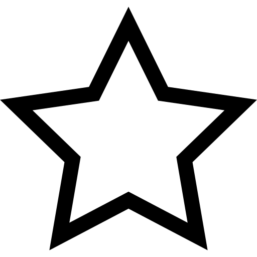
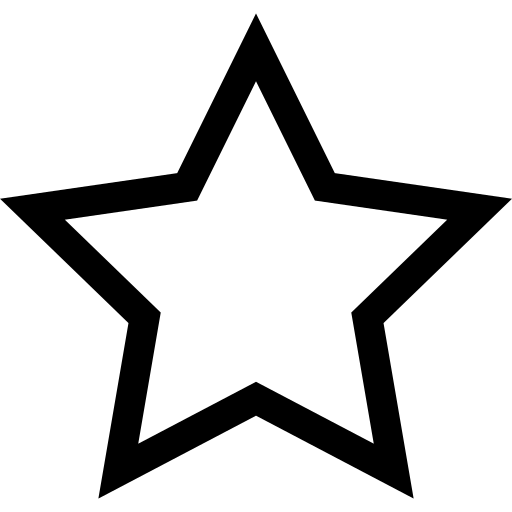

Animale fantastice și unde le poți găsi
Animale fantastice și unde le poți găsi (titlu original: Fantastic Beasts and Where to Find Them) este un film fantastic britanic din 2016 regizat de David Yates și distribuit de Warner Bros. Pictures. Este un spin-off al seriei de filme Harry Potter, scenariul este scris de J. K. Rowling (debut scenaristic) pe baza cărtii sale omonime Fantastic Beasts and Where to Find Them. În rolurile principale îi putem vedea pe Eddie Redmayne, Katherine Waterston și Colin Farrell. Filmul a fost filmat în mai multe locuri, printre care: Londra, Liverpool și New York, iar cheltuielile de producție s-au ridicat la 180 milioane $. Acest film este un spin-off al seriei Harry Potter care este bazat pe cartea cu același nume. Animale fantastice și unde le poți găsi este un film în care acțiunea se petrece în anul 1926 și spune povestea lui Newt Scamander, un tânăr magician, ce sosește la New York cu o valiză magică din piele ce conține mai multe tipuri de creaturi magice. După ce iese din port se întâlnește cu Mary Lou Barebone, care este membră a celui de-al Doilea Salem. Ea predică despre existența ființelor magice și despre modul în care acestea ar trebui vânate și doborâte. După ce o creatură magică evadează din geanta lui Newt Scamander, aceasta intră într-o bancă și în timp ce încearcă să o recupereze, un „Nu-Mag” – Jacob Kowalski apare în poveste și de acolo va juca un rol important. Această fugă după creaturile magice care tot evadează din geanta lui Newt Scamander îi atrage atenția lui Percival Graves care este Auror și director în securitatea magiei. Acesta are planuri ascunse și are de gând să se folosească de atenția pe care Newt o tot atrage asupra lui în așa fel încât să-și ducă la îndeplinire scopurile personale. Luând în considerare că acest film face parte din categoria: Aventură, Fantezie și Familie și este cu și despre magie, din orice categorie de vârstă nu a-ți face parte, o să vă placă acest film, mai ales dacă sunteți fan/fană seriei Harry Potter.